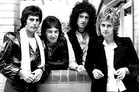
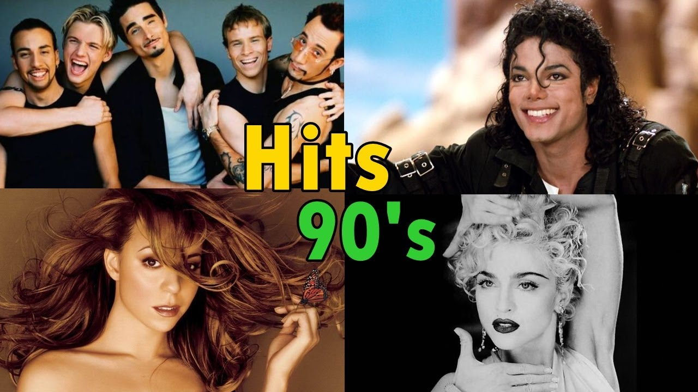
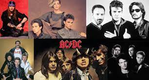

- exitos de los 70 
- exitos de los 80 
- exitos de los 90 
1. Evil Woman - Electric Light Orchestra 2. Tiny Dancer - Elton John 3. Dreams - Fleetwood Mac 4. A Horse with No Name - America 5. September - Earth, Wind & Fire 6. Take It Easy- Eagles 7. Don't Stop 'Til You Get Enough - Michael Jackson 8. The Passenger - Iggy Pop 9. Hooked on a Feeling - Blue Swede 10. I Wonder - Rodriguez 11. Stayin' Alive - Bee Gees 12. Play That Funky Music - Wild Cherry 13. I Want You Back - Jackson 5 14. (Don't Fear) The Reaper - Blue Oyster Cult 15. Go Your Own Way - Fleetwood Mac 16. Piano Man - Billy Joel 17. Thunder Road - Bruce Springsteen 18. Surrender - Cheap Trick 19. Midnight Train to Georgia - Gladys Knight & The Pips 20. American Pie - Don McLean
1. Don't Stop Believin' - Journey 2. I Wanna Dance with Somebody (Who Loves Me) - Whitney Houston 3. Billie Jean - Single Version - Michael Jackson 4. Africa - Toto 5. Girls Just Want to Have Fun - Cyndi Lauper 6. Take On Me - A-ha 7. Eye of the Tiger - Survivor 8. Sweet Dreams(Are Made of This) - Eurythmics 9. Wake Me up Before You Go-Go - Wham! 10. Uptown Girl - Billy Joel 11. Tainted Love - Soft Cell 12. Beat It - Michael Jackson 13. Don't You (Forget About Me) - Simple Minds 14. Your Love - The Outfield 15. Manic Monday - The Bangles 16. Down Under - Men At Work 17. Born in the U.S.A. - Bruce Springsteen 18. Dancing in the Dark - Bruce Springsteen 19. We Built This City - Starship 20. Jessie's Girl - Rick Springfield
1. Wannabe - Spice Girls 2. Under The Bridge - Red Hot Chili Peppers 3. Waterfalls - TLC 4. Pretty Fly (For a White Guy) - The Offspring 5. I Don't Want to Miss a Thing - Aerosmith 6. Everybody (Backstreet's Back) - Backstreet Boys 7. Inside Out - Eve 6 8. Torn - Natalie Imbruglia 9. Semi-Charmed Life - Third Eye Blind 10. Wonderwall - Oasis 11. Genie in a Bottle - Christina Aguilera 12. Drive - Incubus 13. How's It Going To Be - Third Eye Blind 14. Good Riddance [Time Of Your Life] - Green Day 15. Bitter Sweet Symphony - The Verve 16. Losing My Religion - R.E.M. 17. I Want It That Way- Backstreet Boys 18. Mambo No. 5 (A Little Bit of...) - Lou Bega 19. When I Come Around - Green Day 20. ...Baby One More Time - Britney Spears